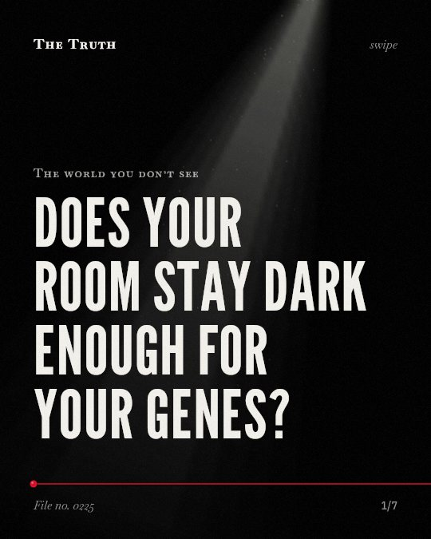

The world you don’t see
Does your room stay dark enough for your genes?

Red light and low light also trigger circadian responses.
The evidence shows that your circadian rhythm reacts to more than just blue light. Even the longest wavelengths and very low light levels at night can impact your internal clock.
Established. Several studies combined, or official data. The evidence is mixed.
What the research found
Exposure to low light levels (5-10 lux) at night when sleeping with eyes closed is linked to a circadian response.
“exposure to low light levels (5-10 lux) at night when sleeping with eyes closed induced a circadian response.”
Systematic review, 2018. Tähkämö et al., Chronobiology International.
Even the longest wavelengths (631 nm, red) and intermittent light exposures are linked to circadian resetting responses.
“In addition, even the longest wavelengths (631 nm, red) and intermittent light exposures induced circadian resetting responses”
Systematic review, 2018. Tähkämö et al., Chronobiology International.
Exposing mouse cortical cultures to as short as 1 h of blue light causes an increase in the expression of neuronal activity-regulated genes.
“We found that exposing these cultures to as short as 1 h of blue light, but not red or green light, results in an increase in the expression of neuronal activity-regulated genes.”
Experiment, 2019. Tyssowski & Gray, eNeuro.
Blue light can be used to switch light-inducible and repressible systems between ON- and OFF-states in bacteria.
“We show that both light-inducible and repressible system can function in parallel with high spatial precision in a single cell and can be switched stably between ON- and OFF-states by repetitive pulses of blue light.”
Study, 2016. Jayaraman et al., Nucleic Acids Research.
Mistimed light exposure is linked to disruptions in the human circadian rhythm.
“Findings from a number of studies suggest that mistimed light exposure disrupts the circadian rhythm in humans, potentially causing further health impacts.”
Systematic review, 2018. Tähkämö et al., Chronobiology International.
Light exposure in the evening, at night and in the morning is linked to changes in the circadian phase of melatonin levels.
“Light exposure in the evening, at night and in the morning affected the circadian phase of melatonin levels.”
Systematic review, 2018. Tähkämö et al., Chronobiology International.
Light alters your internal clock.
Mistimed light exposure is linked to disruptions in your circadian rhythm. This includes changes in the phase of melatonin levels. Even exposure with your eyes closed can trigger a response.
Your environment is never fully dark.
That may be why you feel restless even in a dim room. Modern light pollution may be constantly signaling your genes to stay active, regardless of the color of the light.
This part is our reading of the evidence, not a finding.
A street lamp outside your window.
You sleep in a room with the curtains drawn. A faint glow from the street filters through the fabric, hitting your skin and eyes while you rest.
The honest summary
The sources confirm that light exposure impacts human circadian rhythms and gene expression, but they also show that these effects are not exclusive to blue light.
The evidence regarding human gene expression is limited to observational links, while specific gene expression changes were only demonstrated in mouse cultures and bacteria.
Is your room ever truly dark?
Sources
- Leena Tähkämö, Timo Partonen, Anu‐Katriina Pesonen (2018). Systematic review of light exposure impact on human circadian rhythm. Chronobiology International. Systematic review, cited 487 times.
- Kelsey M. Tyssowski, Jesse M. Gray (2019). Blue Light Increases Neuronal Activity-Regulated Gene Expression in the Absence of Optogenetic Proteins. eNeuro. Experiment, cited 56 times.
- Premkumar Jayaraman, Kavya Devarajan, Tze‐Kwang Chua et al. (2016). Blue light-mediated transcriptional activation and repression of gene expression in bacteria. Nucleic Acids Research. Study, cited 145 times.
Also read for this file, not quoted
- Ungurianu & Marina (2025). Melatonin and Cortisol Suppression and Circadian Rhythm Disruption in Burnout Among Healthcare Professionals: A Systematic Review.
- Jenkins et al. (2001). UV and blue light signalling: pathways regulating chalcone synthase gene expression in Arabidopsis.
- Zhang et al. (2018). Effect of Red and Blue Light on Anthocyanin Accumulation and Differential Gene Expression in Strawberry (Fragaria × ananassa).
This file was researched and drafted by software, then checked by rules a model cannot talk its way around: each quote above was matched word for word against the paper, and every number had to appear in it. How files are made.